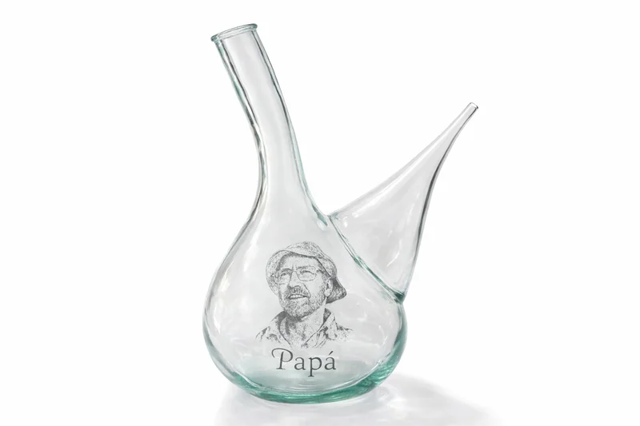
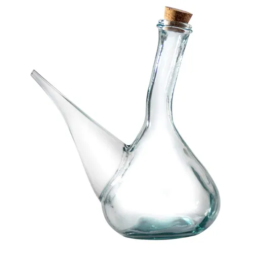
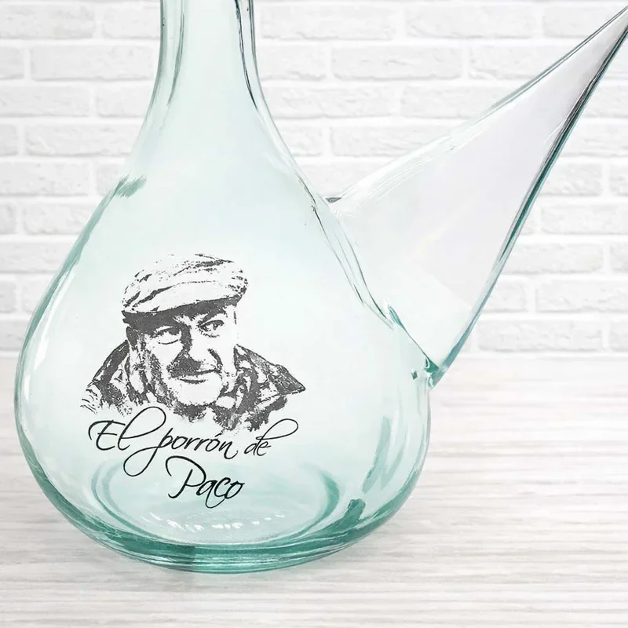
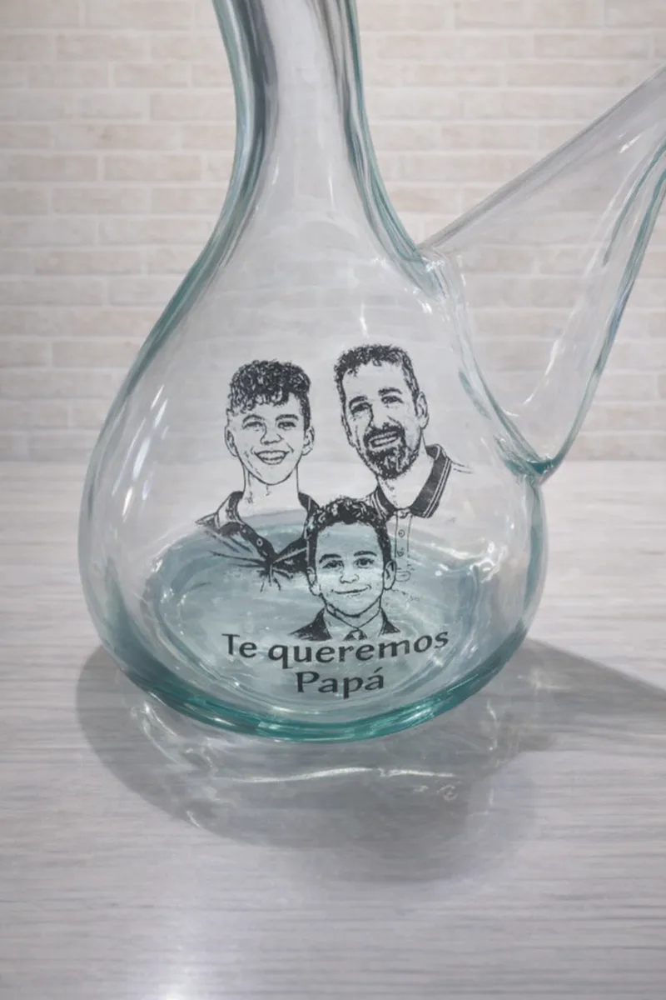
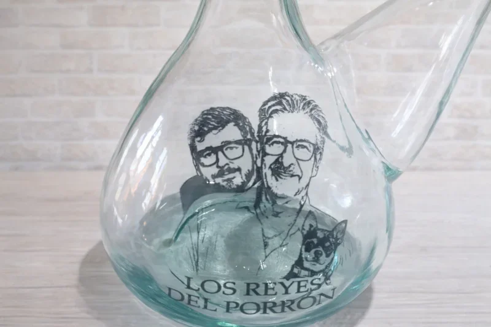

Porrón personalizado: el regalo original que triunfa
Descubre por qué el porrón personalizado es el regalo original perfecto para cualquier ocasión...
Descubre el vaso mágico para vino de Cataluña. ¡Ahora con grabado láser de tu foto!
Comprar porrón personalizado
El porrón es un vaso tradicional español para beber vino, originario de Cataluña. Su forma característica — jarra con cuello estrecho y pitorro especial — permite beber vino sin tocar el vaso con los labios.
¡No es solo una forma de beber vino, es una experiencia! El porrón une a la gente en la mesa y crea momentos inolvidables.

¡Crea un regalo único! Transformamos tu foto en un dibujo lineal y lo grabamos con láser en el porrón de vidrio.
Convertimos tu foto en un dibujo artístico y lo grabamos en vidrio
Para cumpleaños, aniversarios, bodas o sin ocasión especial
Porrón auténtico de vidrio artesanal de Cataluña
Mira nuestras realizaciones con grabado láser



Descubre por qué el porrón personalizado es el regalo original perfecto para cualquier ocasión...
Descubre cómo maridar tu porrón con las mejores tapas españolas...
¿Sabes diferenciar un porrón de un botijo? Te lo explicamos...
Ideas para integrar el porrón en la decoración de tu hogar...
Ideas originales de porrones personalizados como regalo de boda...
Descubre los vinos que mejor se potencian al beber con porrón...
Guía completa para mantener tu porrón impecable sin romperlo...
Comparativa completa entre beber con porrón o con botella de vino...
Te contamos si realmente merece la pena fabricar tu propio porrón...
¿Buscas un regalo original para un amante del vino?...
Un porrón estándar contiene aproximadamente 1L, es decir, una botella de vino.
Requiere un poco de práctica, ¡pero nuestra guía te ayudará a dominar el arte de beber con porrón!
Desde el pedido hasta el envío — aproximadamente 5-7 días laborables.